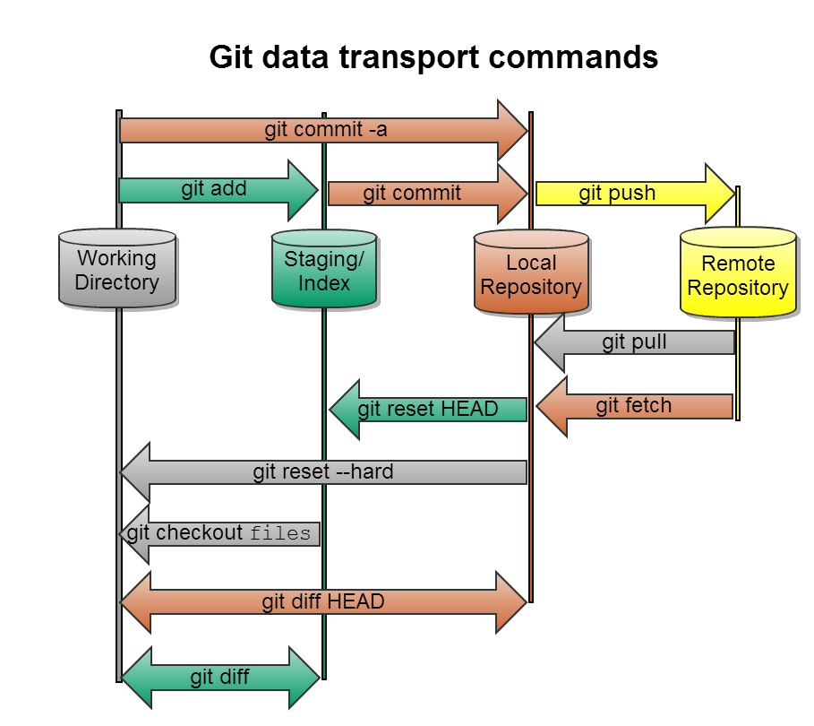
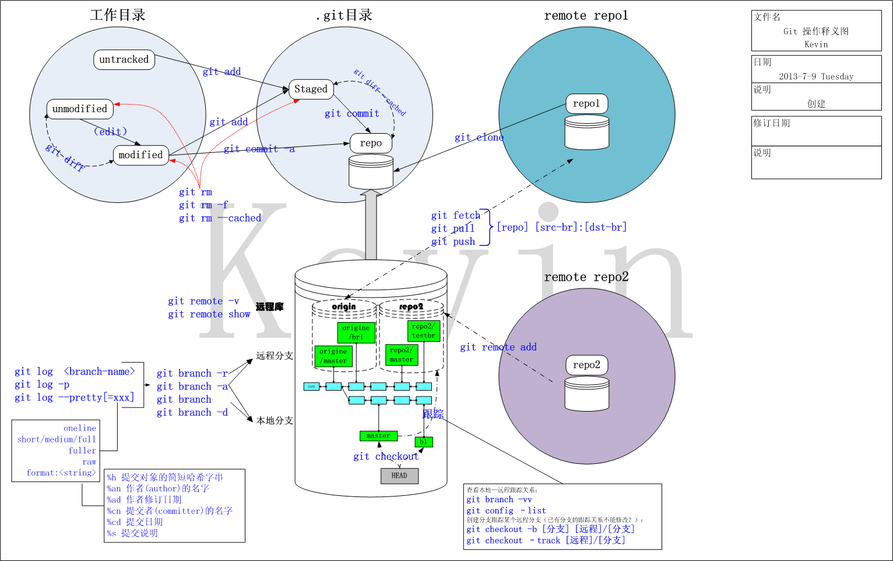

Git 基础篇
wkevin
ZTE
Slides操作提示
请按空格键
| 按键 | 效果 |
|---|---|
| 空格/Shift+空格 | 一维向后/前遍历每张Slides |
| PageDown/PageUp | 一维向后/前遍历每张Slides |
| 上/下/左/右箭头 | 二维展示每张Slides |
| Esc | 二维显示Slides地图 箭头：移动 Enter：选中 |
请按 Esc 键
源起
VCS (Version Control System)
- SCCS(Source Code Control System) -- 1970+, M.J.Rochkind
- RCS(Revision Control System) -- 1980+, Walter F. Tichy
- CVS(Concurrent Version System) -- 1986, Dick Grune
- SVN(Subversion) -- 2001
- BitKeeper
- Mercurial
- Git -- 2005.4, Linus Torvalds
Git从何而来

Git去往何处
2005年7月26日开始，Torvalds把Git托付给了一位日本人：Junio Hamano。Torvalds也说过自己一生最大的成功之一就包括把git托付给Hamano。
Hamano现在google，他的github帐号为：gitster。

github上Git的卓越组织:
- git:
- 目前有8位成员，牵头人 Scott Chacon，他们充当管理者和传教士的角色
- 比较重要的贡献是：
- 维护git源码
- Hamano(gitster)并没有加入到这个Orgnization中，而只是fork到自己账号下，然后PR到 git/git，看来gitster只是想当程序员，不想当管理者和传教士——大概源于日本人和中国人类似，都比较低调。
- 管理和维护 git-scm.com 网站
- 维护git源码
- progit
- 目前有15位成员，牵头人 Scott Chacon 和 Ben Straub，两人目前都供职于github公司，其他人多是从事翻译工作。
- 比较重要的贡献
- 写了《Pro git》这本书，此书被翻译成多种语言，被奉为经典。
官方Specification
- Git Man Page: 即： git help
- Git User Manual
- Git Tutorial
- How to
Book
- Pro Git:根正苗红的书
- Git Community Book 中文版
- Version Control with Git,《Git版本控制》
- git简明教程
Website
- git-scm.com
- git 维基百科
- git SCM wiki -- 2011年已停止更新
Git 常用命令
git help 给出的关键命令
$ git help
add Add file contents to the index
bisect Find by binary search the change that introduced a bug
branch List, create, or delete branches
checkout Checkout a branch or paths to the working tree
clone Clone a repository into a new directory
commit Record changes to the repository
diff Show changes between commits, commit and working tree, etc
fetch Download objects and refs from another repository
grep Print lines matching a pattern
init Create an empty Git repository or reinitialize an existing one
log Show commit logs
merge Join two or more development histories together
mv Move or rename a file, a directory, or a symlink
pull Fetch from and integrate with another repository or local branch
push Update remote refs along with associated objects
rebase Forward-port local commits to the updated upstream head
reset Reset current HEAD to the specified state
rm Remove files from the working tree and from the index
show Show various types of objects
status Show the working tree status
tag Create, list, delete or verify a tag object signed with GPGPractice
快速记忆，请写出至少5个git的命令
Git的逻辑分区及几个关键命令

Practice
请绘出上页的图
wkevin版的绘图

Git my diary
一个完整的日记示例
最基本的两个配置：name 和 email
$ git config --global user.name wkevin
$ git config --global user.emal wkevin27@gmail.com创建一个文件夹并写一篇日记
MBP:demo wangkevin$ mkdir mydiary
MBP:demo wangkevin$ cd mydiary
$ cat >diary.md
# Diary
## 2016.1.31
回家过年^C
$ ls
diary.md
$ cat diary.md
# Diary
## 2016.1.31
回家过年git init 在文件夹中创建git库
$ git init
Initialized empty Git repository in /Users/wangkevin/workspace/demo/mydiary/.git/和SVN有.svn类似，git也有.git
$ ls -a
. .. .git diary.md
$ ls .git
HEAD config hooks objects
branches description info refs
$ cat .git/config
[core]
repositoryformatversion = 0
filemode = true
bare = false
logallrefupdates = true
ignorecase = true
precomposeunicode = truegit status 查看当前状态
$ git status
On branch master
Initial commit
Untracked files:
(use "git add <file>..." to include in what will be committed)
diary.md
nothing added to commit but untracked files present (use "git add" to track)显示一个未被管控的文件(Untracked files) diary.md
git add filename 将文件纳入管理
$ git add diary.md filename 支持通配符，最常用的就是点(.)表示所有文件
git status
$ git status
On branch master
Initial commit
Changes to be committed:
(use "git rm --cached <file>..." to unstage)
new file: diary.md显示此文件待提交（to be committed），此时文件已经开始被git管理了，文件进入一种暂存状态（stage），如果想反悔可以用git rm --cached使其进入unstage状态
git status -sb
-s/--short 短模式
$ git status -s
A diary.md-b/--branch 显示分支
$ git status -sb
## Initial commit on master
A diary.mdgit status不带参数默认就是-b的，所以常和短模式合作，合并为一个sb，哈哈
git commit 将文件从暂存态提交入库
$ git commit
aster (root-commit) 14dd781] create mydiary
1 file changed, 4 insertions(+)
create mode 100644 diary.md暂存就像回收站（删除前给你一个check的机会，多次操作放入回收站的文件可以一次清空），多次操作放入暂存，最后考虑成熟了，check OK了，再commit提交
编辑 log message
1
2 # Please enter the commit message for your changes. Lines starting
3 # with '#' will be ignored, and an empty message aborts the commit.
4 # On branch master
5 #
6 # Initial commit
7 #
8 # Changes to be committed:
9 # new file: diary.md
10 #执行 git commit 后会自动打开一个编辑器（编辑器是可配置的，以后再说怎么配置），比如 vi，进行提交log的撰写，保存退出即提交成功，不保存退出即放弃提交
再查 git status，都已经提交干净了
$ git status
On branch master
nothing to commit, working directory clean
$ git status -s现在可以看log了
$ git log
commit 14dd7815fcf56c961e11c52e96e2fc3fbd7d0543
Author: wkevin <wkevin27@gmail.com>
Date: Sun Jan 31 11:39:55 2016 +0800
create mydiary每天可以随时写日记、随时git add、适时git commit，经过一段时间，你的diary库就越来越让你爱不释手了
$ git log
commit 67840e1813af1084abd5d07d2e2a2e185c679f09
Author: wkevin <wkevin27@gmail.com>
Date: Sun Jan 31 12:20:26 2016 +0800
2.2日记
commit bf36ab9b0d489a2eda911be9e01bddc395fc29e0
Author: wkevin <wkevin27@gmail.com>
Date: Sun Jan 31 12:19:33 2016 +0800
2.1的日记
commit 14dd7815fcf56c961e11c52e96e2fc3fbd7d0543
Author: wkevin <wkevin27@gmail.com>
Date: Sun Jan 31 11:39:55 2016 +0800
create mydiarygit 和 svn 不同，没有一个数字递增的节点号，而是一串40Bytes的哈希字符，指定一个提交只需要给出这个字符串即可，当然不能让你每次都把40个字符全输入一遍，只需要输入够区分提交的即可（一般是前7位），如果咱的库规模还很小，前4位也行哦（上文中的“6784”）
Practice
请简要的按顺序写出上面例子中用到的git命令
Git Revesion
git revision 的描述
<sha1>: e.g. dae86e<describeOutput>: e.g. v1.2.3<refname>: e.g. HEAD，master, heads/master, refs/heads/master@: HEAD的简写<refname>@{<date>}： data日期之前的第一个revision<refname>@{<n>}: 第n-th个revision- git log 出的1-st revision在这里算 2-nd
<rev>^: e.g. HEAD^, v1.2.3^， 表示 rev的前一个revision<rev>~<n>: e.g. HEAD~3, master~3，去掉n个，取下一个- git log 出的1-st revision开始去掉
详细：
git help revisions 或 man gitrevisions
git revision range 的描述
<rev>: 从rev到结束的所有revision都包括进来^<rev>: 从rev到结束的所有revision都抛弃掉<rev1> <rev2>: “rev1到结束”和“rev2到结束”取并集，即：rev1或rev2到结束最多的那个range<rev1> ^<rev2>==^<rev2> <rev1>: “rev1到结束”和“rev2到结束”取并集，即：rev1 和 rev2 之间，但不包括rev2，rev1和rev2无时间先后<rev1>..<rev2>: 从rev2往前，到rev1（但不包括rev1）或rev1所在的分支的交汇点，rev1或rev1与rev2分支交汇点要在rev2的时间前面<rev1>...<rev2>:<rev>^@： rev的所有parent，不包括 rev<rev>^!: 仅rev
详细：
git help revisions 或 man gitrevisions
Practice
使用 git log 查看
$ git log zte$ git log @{2016-7-13}$ git log master~10$ git log master@{12}Practice
$ git log ^@{1month} HEAD$ git log HEAD ^@{1month}$ git log @{1month}..$ git log ..@{1month} //WRONGgit config
location
| command | 说明 |
|---|---|
| git config [--local] | 配置项保存到当前git项目(./.git) 仅本项目有效默认 |
| git config --system | 配置项保存到系统(/etc/gitconfig) 所有git项目有效 |
| git config --global | 配置项保存到用户根目录(~/.git/config) 当前用户的所有项目有效 |
| git config --file | 配置项保存到指定文件 |
alias
语法
$ git config --global alias.命令缩写 原命令+参数举例
$ git config --global alias.st "status -sb"使用缩写
$ git st
## master
M diary.md别名（alias）是linux系统的基本概念，在git中也如鱼得水。
我的常用别名
$ git config -l
user.name=wkevin
user.email=wkevin27@gmail.com
alias.st=status
alias.co=checkout
alias.br=branch -avv
alias.rt=remote -vv
alias.l=log --format=format:'%C(auto) %h | %ad | %Cred %an %Cgreen %s' --date=short -n 25 --graph
alias.lg=log --format=format:'%C(auto) %h | %ai | %ci | %Cred %an %Cgreen %s'
alias.cl=clone
alias.si=submodule init
alias.sa=submodule add
alias.su=submodule update
alias.ci=commit
alias.sab=submodule add -b master
alias.sur=submodule update --remote
alias.tg=log --format=format:'%C(auto) %h | %ai | %ci | %d | %Cred %an %Cgreen %s' --simplify-by-decorationgit add
Focal Point
- git add onefile
- git add .
- git add onefolder/.
stage
- 名词：舞台、讲台，比如：戏剧表演的舞台、国际政治的舞台；阶段，类似phase，比如：stage one/two意思是第一/二阶段，three-stage rocket意思是三级火箭
- 动词：上演、举行、组织，类似play、organize，比如：stage a football match，举办足球赛
stage本身并没有暂存的意思，git中可以理解为把文件放到一个舞台上上演一下，进而文件进入到一个新的阶段。——用这个词可以说是一箭三雕
git help stage
$git help stage
GIT-STAGE(1) Git Manual GIT-STAGE(1)
NAME
git-stage - Add file contents to the staging area
SYNOPSIS
git stage args...
DESCRIPTION
This is a synonym for git-add(1). Please refer to the documentation of that command.- help中可以发现：
git stage是同义于git add - staging area： 舞台区、阶段区、进而翻译为暂存区 —— 如果让我翻译，我会译为：检视区。
暂存区 ～ 回收站
- 把文件放在回收站是给操作人一个检视的机会和反悔的机会，操作妥当后再彻底删除，彻底删除后再想反悔就要费劲了。
- git的staging area也是给用户一个检视的机会和反悔的机会，用户可以：
- 使用
git add或git stage命令随时向SA增加文件，和回收站不同的是后进入SA的文件会覆盖前面进入的 - 使用
git checkout命令随时从SA反悔，文件会从SA移除，是否覆盖
- 使用
.gitignore
- 当前目录下的忽略文件、目录的列表，如：编译过程文件……
- 可以存在与git项目的根目录和子目录下，每个文件只影响该目录下的文件和子目录
- 手工写，没有自动生成
- 支持shell通配符，如：
* #开头表示注释行!开头的表示取反
linux.git$ cat .gitignore
12 .*
13 *.o
14 *.o.*
15 *.a
16 *.s
17 *.ko
18 *.so
......
102 # Kconfig presets
103 all.config
104
105 # Kdevelop4
106 *.kdev4git commit
Focal Point
- git commit -a/--all : 提交所有已暂存、未暂存、未追踪的文件
- git commit -m "xxx"
- git commit : 没有 -m "xxx", git 会调用一个外部编辑器
- 编辑器保存退出 && message不为空： 则算一次成功的提交
- 不保存退出 || message为空： 提交作废
Ubuntu 的编辑器
$ update-alternatives --config editor
There are 8 choices for the alternative editor (providing /usr/bin/editor).
Selection Path Priority Status
------------------------------------------------------------
* 0 /usr/bin/vim.gnome 60 auto mode
1 /bin/ed -100 manual mode
2 /bin/nano 40 manual mode
3 /usr/bin/vim.athena 50 manual mode
4 /usr/bin/vim.basic 30 manual mode
5 /usr/bin/vim.gnome 60 manual mode
6 /usr/bin/vim.gtk 50 manual mode
7 /usr/bin/vim.nox 40 manual mode
8 /usr/bin/vim.tiny 10 manual mode
Press enter to keep the current choice[*], or type selection number: git rm
删除文件
- 直接使用 rm 删除，会让 git 认为文件丢失（missing状态）
- git rm 才能让 git 争取识别用户意图
- git rm 操作后文件本地工作目录中的文件即被删除， git commit 时删除对象库中的。
git log
git shortlog
GitChat.git$ git shortlog
Kevin Wang (3):
create
增加："git在哪里"和"git for windows 咋用" 章节
add git for windows 章节
wkevin (36):
github desktop for windows snapshot
在动车上写的：修改为Round x，增加了每个Round的插图。 虽然是春运，
基本写完 Round 2 ，git log 部分
写完 “## 我要能像TortoiseSVN那样左右两栏对比看diff”章节
笔误: 缺少一个反括号
笔误
new file: img/git-state-and-area.svg
春节结束了，吃肉、喝酒、斗地主之余，带着酒劲继续写了一些，提交一下，很多地方还是
1.修改TOC的定义：空格使用'-'替代 2.增加“分支”、“ssh”、“远程分支”‘rese
增加“git分支之间的关系咋看”、“到哪里找开源项目”、“等章节，
sublime的markdown preview插件生成的headeranchor与markdowntoc插件生成- 根据提交人分类
- 每次提交占1行
- 时间先旧后新
git log --date=short
GitChat.git$ git log HEAD^!
commit 04e9afe4329f90d0c1dd42b0ac20f7b9324e33e6
Author: wkevin <wkevin27@gmail.com>
Date: Tue Jul 12 19:56:23 2016 +0800
增加Slides功能GitChat.git$ git log --date=short HEAD^!
commit 04e9afe4329f90d0c1dd42b0ac20f7b9324e33e6
Author: wkevin <wkevin27@gmail.com>
Date: 2016-07-12
增加Slides功能git log --pretty=xxx
GitChat.git$ git log --pretty=oneline
04e9afe4329f90d0c1dd42b0ac20f7b9324e33e6 增加Slides功能
ade6a93f4770d152348b615cbc923daa7bcc1781 新增章节：push 错了，我要丢弃remote上的某个节点
145fedb470129987f86ff16f8f3ebf47b5a0a584 增加章节：分支名能否用中文
9bdce19d503fb59377ed2058bdb4b98d87374cab 笔误
513687920c881f938a8230e8288596a7905727ff WWDC2016中刚刚宣布OS.X更名为macOS，本文即刻修改
b748256b246a11137fc82556fe8da96ec1567214 增加章节：如何避免arc diff玷污现有节点； 如何创建只包含部分文件的评审单
d6efce6e8804ecb027762e0151ed071bc7d63b6d 增加章节： arc diff的ubuntu安装
f8c101daaf75121dd4f1f1380b4dc5c1ed85cea0 Merge remote-tracking branch 'zte/master'
9238c6940753e9560fb6a3c688f1c2d0d9135a72 新增 Round8：git与phabricator
1631166cb86d7648e8a3aa98f51ea0fe5391f1e4 增加：整理git的外网托管网站
5d200a32cb86d9818926eea8caf8d5da389ac30d 新增：分支的合并（git merge）有哪几种场景，合并时如何处理分支中的“垃圾”log，把特性分支合入主干”和“把主干合入特性分支”有什么区别
11f41a52a099dd3114b54eb1878201c29893b3c2 完善 git proxy 的描述
9d8d843db0a021fc8054b73e157d4a648e4d94bb 使用 rawgit.com 展示git log --pretty=short
GitChat.git$ git log --pretty=short
commit 04e9afe4329f90d0c1dd42b0ac20f7b9324e33e6
Author: wkevin <wkevin27@gmail.com>
增加Slides功能
commit ade6a93f4770d152348b615cbc923daa7bcc1781
Author: wkevin <wkevin27@gmail.com>
新增章节：push 错了，我要丢弃remote上的某个节点
commit 145fedb470129987f86ff16f8f3ebf47b5a0a584
Author: wkevin <wkevin27@gmail.com>
增加章节：分支名能否用中文git log --pretty=formate:"xxx"
- xxx:
- %h：commit hash
- %ai: author date
- %an: author name
- %ci: commit date
- %cn: commit name
- %s: log message
GitChat.git$ git log --pretty=format:'%ad %an %s'
Tue Jul 12 19:56:23 2016 +0800 wkevin 增加Slides功能
Fri Jul 8 14:20:27 2016 +0800 wkevin 新增章节：push 错了，我要丢弃remote上的某个节点
Fri Jul 8 09:56:16 2016 +0800 wkevin 增加章节：分支名能否用中文
Thu Jul 7 13:46:02 2016 +0800 wkevin 笔误git config --global alias.lg "log ..."
git config --global alias.lg "log --format=format:'%C(auto) %h | %ai | %ci | %Cred %an %Cgreen %s'"GitChat.git$ git lg
04e9afe | 2016-07-12 19:56:23 +0800 | 2016-07-12 19:56:23 +0800 | wkevin 增加Slides功能
ade6a93 | 2016-07-08 14:20:27 +0800 | 2016-07-08 14:20:27 +0800 | wkevin 新增章节：push 错了，我要丢弃remote上的某个节点
145fedb | 2016-07-08 09:56:16 +0800 | 2016-07-08 09:56:16 +0800 | wkevin 增加章节：分支名能否用中文
9bdce19 | 2016-07-07 13:46:02 +0800 | 2016-07-07 13:46:02 +0800 | wkevin 笔误
5136879 | 2016-06-14 13:35:16 +0800 | 2016-06-14 13:35:16 +0800 | wkevin WWDC2016中刚刚宣布OS.X更名为macOS，本文即刻修改
b748256 | 2016-06-13 15:14:08 +0800 | 2016-06-13 15:14:08 +0800 | wkevin 增加章节：如何避免arc diff玷污现有节点； 如何创建只包含部分文件的评审单
d6efce6 | 2016-06-13 11:51:26 +0800 | 2016-06-13 11:51:26 +0800 | wkevin 增加章节： arc diff的ubuntu安装
f8c101d | 2016-06-08 17:21:39 +0800 | 2016-06-08 17:21:39 +0800 | wkevin Merge remote-tracking branch 'zte/master'
9238c69 | 2016-06-08 17:19:33 +0800 | 2016-06-08 17:19:33 +0800 | wkevin 新增 Round8：git与phabricator
1631166 | 2016-05-25 16:09:06 +0800 | 2016-05-25 16:09:06 +0800 | wkevin 增加：整理git的外网托管网站gitk
git diff
比较对象
| 命令 | 比较对象 |
|---|---|
git diff |
工作目录～索引区 |
git diff --cached |
索引区～对象库 |
git diff <rev> |
工作目录~rev |
git diff <rev1> <rev2>git diff <rev1>..<rev2> |
rev1~rev2 |
结果显示
| 命令 | 结果显示 |
|---|---|
git diff |
结果是变更文件，和patch形式的文本 |
git diff --stat |
结果只显示变更文件，和变更的内容幅度 |
git diff --name-only |
结果只显示变更文件的文件名 |
git diff --name-stat |
结果显示变更文件的文件名，和增删改的状态 |
linux diff
diff f1 f2 == f1与f2之间的差异 == f1 -> f2 的变化过程
| diff shell 命令 | 3种输出格式 |
|---|---|
| $ diff f1 f2 | 正常格式（normal diff） |
| $ diff f1 f2 -c | 上下文格式（context diff） |
| $ diff f1 f2 -u | 合并格式（unified diff） |
diff f1 f2 =X= diff f2 f1
linux diff 2
两个文件： 1.txt、2.txt，并列显示内容如下：
$ diff 1.txt 2.txt -y
1 1
2 2
3 | 7
4 4
5 <
6 6
7 7
> 8$ diff 1.txt 2.txt
3c3
< 3
---
> 7
5d4
< 5
7a7
> 8 - 3c3: 1.txt的第3行 change 为2.txt的第3行
- < 3 / > 7: change 方式为 1.txt 删除字符3， 2.txt 增加字符7
- 5d4: 1.txt的第5行 delete
- ……
$ diff 1.txt 2.txt -c
*** 1.txt 2016-07-16 19:20:03.593327527 +0800
--- 2.txt 2016-07-16 19:20:38.829329212 +0800
***************
*** 1,7 ****
1
2
! 3
4
- 5
6
7
--- 1,7 ----
1
2
! 7
4
6
7
+ 8- "***"表示变动前的文件
- "---"表示变动后的文件
$ diff 1.txt 2.txt -u
--- 1.txt 2016-07-16 19:20:03.593327527 +0800
+++ 2.txt 2016-07-16 19:20:38.829329212 +0800
@@ -1,7 +1,7 @@
1
2
-3
+7
4
-5
6
7
+8- "---"表示变动前的文件
- "+++"表示变动后的文件
Practice
diff 2.txt 1.txt -u
$ diff 2.txt 1.txt -u
--- 2.txt 2016-07-16 19:20:38.829329212 +0800
+++ 1.txt 2016-07-16 19:20:03.593327527 +0800
@@ -1,7 +1,7 @@
1
2
-7
+3
4
+5
6
7
-8Practice
git diff 使用的是哪种 diff 形式？
git diff 与 git log
- git diff 不关心待比较文件的历史，也不关心分支，只关注当前对象本身
- git log 更关注文件的来龙去脉，即对象的parent、son……
Practice
比较当前HEAD版本和上一个HEAD版本
$ git diff HEAD^ HEADPractice
比较3者的异同：
1. $ git diff topic master
2. $ git diff topic..master
3. $ git diff topic...master
- Changes between the tips of the topic and the master branches.
- Same as above.
- Changes that occurred on the master branch since when the topic branch was started off it.
git difftool

git branch
Focal Point
| git branch | 查看所有分支 |
| git branch -v | 查看所有分支，和当前最新的commit |
| git branch -vv | 查看所有分支，和当前最新的commit 和upstream |
| git branch xyz | 创建 xyz 分支 |
| git branch -d xyz | 删除 xyz 分支，如果分支尚未合入主干 或upstream，则失败 |
| git branch -D xyz | 删除 xyz 分支，强制 |
branch is ref
GitChat.git$ tree .git/refs
.git/refs
├── heads
│ ├── master
│ └── zte
├── remotes
│ ├── origin
│ │ ├── HEAD
│ │ └── master
│ └── zte
│ ├── master
│ └── zte
└── tags
5 directories, 6 filesPractice
查看某 branch 内commit的关系
GitChat.git$ git log --oneline --graph
* 384453f 开始写《Git基础》的Slides
* 04e9afe 增加Slides功能
* ade6a93 新增章节：push 错了，我要丢弃remote上的某个节点
* 145fedb 增加章节：分支名能否用中文
* 9bdce19 笔误
* 5136879 WWDC2016中刚刚宣布OS.X更名为macOS，本文即刻修改
* b748256 增加章节：如何避免arc diff玷污现有节点； 如何创建只包含部分文件的评审单
* d6efce6 增加章节： arc diff的ubuntu安装
* f8c101d Merge remote-tracking branch 'zte/master'
|\
| * 1631166 增加：整理git的外网托管网站
| * 5d200a3 新增：分支的合并（git merge）有哪几种场景，合并时如何处理分支中的“垃圾”log
| * 11f41a5 完善 git proxy 的描述
* | 9238c69 新增 Round8：git与phabricator
|/
* 9d8d843 使用 rawgit.com 展示Practice
查看所有 branch 的commit的关系
GitChat.git$ git log --oneline --graph --all
* 5e0725b Merge branch 'master' into zte
|\
| * 384453f 开始写《Git基础》的Slides
| * 04e9afe 增加Slides功能
* | 21376f0 Merge branch 'master' into zte
|\ \
| |/
| * ade6a93 新增章节：push 错了，我要丢弃remote上的某个节点
* | f7d4f08 Merge branch 'master' into zte
|\ \
| |/
| * 145fedb 增加章节：分支名能否用中文
* | e668a52 增加一点zte公司内部的解释
|/
* 9bdce19 笔误
* 5136879 WWDC2016中刚刚宣布OS.X更名为macOS，本文即刻修改
* b748256 增加章节：如何避免arc diff玷污现有节点； 如何创
* d6efce6 增加章节： arc diff的ubuntu安装Practice
查看某个 commit 所属的 branch
GitChat.git$ git branch --contains 9d8d
* master
ztegit checkout
略
git merge
Focal Point
- 不必从干净的工作目录开始合并
- 但劝你最好从干净的工作目录开始合并，除非你想把自己搞晕
- merge 前做好解决冲突的心理准备
- merge 前看清除当前所处的 branch
合并冲突
步骤：
- git merge rev //糟糕，冲突了
- git diff //看看啥冲突，此时的 git diff 和平常的稍有不同
- vi conflictFile 或 git mergetool //解决冲突，最后记得删掉各种标记符号
- git add //重新add
- git commit //里面会有 merge 的提示
Practice
演示合并冲突、及解决
合并策略
- 退化合并
- 常规合并
- 特殊合并
最后
几点建议
- 使用命令行，远离GUI
- 使用快捷键，随时调出命令行
- 使用简文本，尽量抛弃word、excel、powerpoint等富文本
- 发扬Git之开源、共享精神
Next Step
| 1. Git 基础篇 | 基本命令的使用 |
| 2. Git 深入篇 | 基本命令的原理图、复杂命令 |
| 3. Git 工作流 | 团队工作模式、约束的最佳实践 |